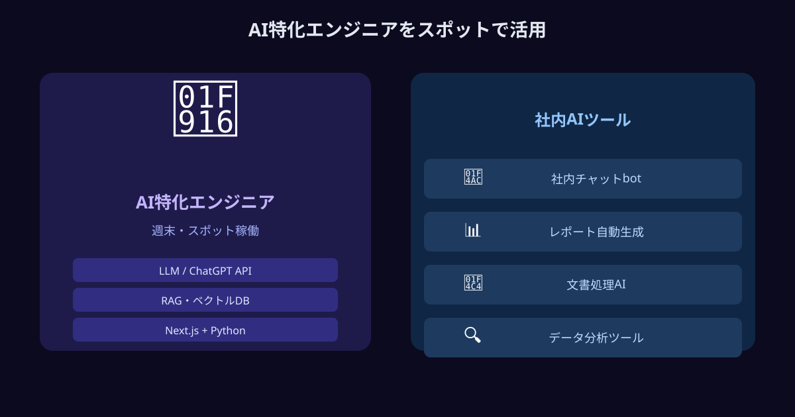
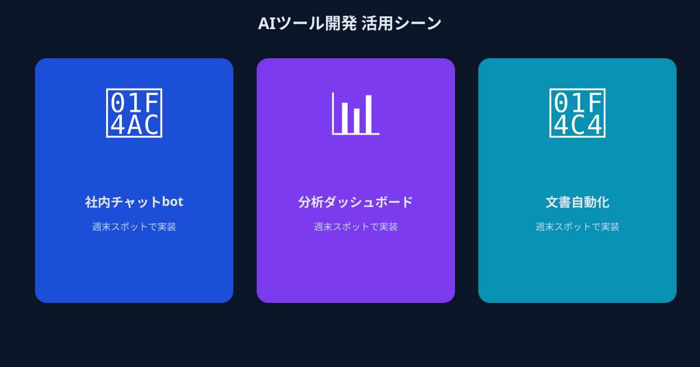

生成AIで社内業務を効率化したい──でも、誰に頼めばいい？
2026年現在、生成AIの活用は企業規模を問わず経営アジェンダに上がるようになりました。しかし「ChatGPTを使えば仕事が効率化する」という認識と、「実際に社内ツールとして動かせる」という実態の間には、依然として大きな溝があります。
この溝を生んでいる最大の原因は明快です。LLMのAPIを業務システムに組み込み、プロンプトエンジニアリングを理解した上で実装できるエンジニアが、多くの企業の社内にいないのです。
「じゃあ外注すればいい」「採用すればいい」——どちらも一見正しい答えのように見えます。しかし実際に踏み出してみると、思わぬ落とし穴が待っています。
「丸投げ外注」と「いきなり内製」の2つの罠
企業がAI社内ツールの開発に取り組む際、まず考えるのはAI受託開発会社への外注です。確かに安心感はありますが、実際のところ、外注には構造的な問題があります。
AI受託開発の業界事情に詳しいコンサルタントによれば、「外注では改善が続かず成果が頭打ちになる」という課題が多くの企業で起きています。PoCから本番運用へ進めるためにはAIのモデルを現場に合わせて調整し続ける工程が不可欠ですが、その都度、外部依存が深まり、コストだけが増えていく構造になりがちです。特に社内にノウハウが蓄積されないまま丸投げしてしまうと、完成したシステムが「ブラックボックス」になってしまい、ちょっとした修正でも高額な費用が発生し続けます。
一方、「それなら内製しよう」というアプローチにも現実的な壁があります。既存の社内エンジニアが生成AIのAPI活用、プロンプトエンジニアリング、RAG構築などに習熟しているケースは稀で、学習から始めるとなると数か月単位の時間がかかります。PoC段階で失敗すれば、その期間のコストは全て埋没します。
- 【丸投げ外注】ブラックボックス化・改善のたびに高コスト・社内ノウハウが蓄積されない
- 【いきなり内製】AI専門知識の学習に数か月・PoCが進まずに止まるリスク・採用コストと時間
「外注では成長が止まり、内製ではスタートできない」——この板挟みに悩む企業が、2026年も非常に多い状況です。
第三の選択肢：週末・スポットで動けるAI特化エンジニアを活用する

大手外注でも内製でもない、第三の道があります。それが「必要な時だけ、必要なスキルを持つ人材にピンポイントで依頼する」というマイクロ・マッチングです。
メガベンチャーや大手IT企業に所属しながら、週末や平日夜に副業として活動しているフルスタックAIエンジニアが国内に一定数います。彼らはLLM API活用、RAG、Agent構築など最新の生成AI技術を業務レベルで扱えるスキルを持ち、かつ「週1日だけ」「このタスクだけ」という柔軟なコミットが可能です。
ANKENでは、こうしたエンジニアと企業を「タスク単位・スポット単位」でマッチングする仕組みを提供しています。初期費用ゼロ、低単価から始められるため、「まず試してみる」というPoC段階から活用できます。
メリット① PoCからプロトタイプを最短1〜2週間で形にできる
大手受託開発では「要件定義→提案→契約→開発」のプロセスに数週間〜数か月かかるのが一般的です。一方、スポット依頼なら「今週末から着手できる」スピード感が実現できます。
「役員にデモを見せてから判断したい」「年度内にPoC結果を出す必要がある」といったタイムラインの制約に、スポット発注は最も柔軟に対応できます。問い合わせ対応ボット、社内ドキュメント検索AI、報告書の自動要約ツールなど、典型的な社内AIツールであれば週末2回分の稼働でプロトタイプが動き始めるケースも少なくありません。
メリット② 大手外注の数分の1のコストでAI即戦力を確保できる
AI受託開発会社への依頼は、小規模な社内ツールでも数十万〜数百万円かかることが珍しくありません。それでいて、改善のたびに追加費用が発生する構造になりがちです。
スポット・タスク単位のマッチングでは、必要な作業量に応じた報酬設計ができるため、固定費をゼロに抑えながら必要な時だけプロのリソースを活用できます。「1週間のスポット依頼で試してみて、手応えがあれば継続的な関係に発展させる」という段階的な活用が、リスクを最小限に抑える上で非常に効果的です。
メリット③ 社内ノウハウの移転・引き継ぎもしやすい
大手外注の最大のリスクは「ブラックボックス化」です。完成品の中身が分からず、改修のたびに高い費用が生じる構造に陥るのは、多くの企業が経験する典型的な失敗パターンです。
マイクロ・マッチングで依頼する場合、エンジニアとの距離が近く、コードや設計の説明を受けながら進められます。「今後は自社で改善できるようにしたい」「社内エンジニアの育成も兼ねたい」というニーズにも応えやすく、長期的に見て社内ノウハウの蓄積につながります。成果を出している企業が採用している「内製×外部パートナー共創」のハイブリッドな進め方の、最初の入口として最適です。
こんな開発ニーズに活用されています

「具体的にどんな企業がどう使っているか」をイメージしやすいよう、実際の活用シーンをご紹介します。
問い合わせ対応の工数が週20時間を超え、事業成長のボトルネックになっていた。Slack連携のAI応答ボットを週末2回分のスポット依頼で構築し、よくある問い合わせのうち約8割を自動化。費用は大手見積もりの約5分の1に収まり、翌月から社内テストを開始できた。
数百ページに及ぶ技術マニュアルを現場スタッフが検索するのに時間がかかっていた。RAGを用いた社内ドキュメント検索システムのプロトタイプを、週1回のオンラインMTGで進捗を確認しながら2週間で完成。社内エンジニアがいなくても、エンジニアと丁寧にすり合わせながら進められた点が決め手だった。
毎月数百件の新商品の説明文作成に、ライター費用と時間が大量に発生していた。商品スペックを入力すると高品質な説明文が自動生成されるPythonツールをタスク単位で依頼。要件定義から最短3日でプロトタイプが納品され、即座に実運用の検討に入れた。
まとめ
「生成AIで社内業務を効率化したい」という意欲があるにもかかわらず、一歩を踏み出せないでいる企業の多くは、「外注か内製か」という二択で思考が止まっています。しかし実際には、その間に「スポット発注でAI即戦力を活用する」という現実的かつ効果的な第三の道があります。
固定費ゼロ・低単価から試せる。最短1〜2週間で動くプロトタイプが手に入る。社内ノウハウの移転もしやすい。これらを同時に実現できるのが、ANKENのマイクロ・マッチングです。高額な外注や時間のかかる採用に踏み出す前に、まずスポット依頼で「動くもの」を作ってみることが、最もリスクが低く、最も学びの多いAI活用の第一歩です。
「こんな機能が欲しいけど実現できるか分からない」という段階からでも、ぜひ一度ご相談ください。
生成AI・LLM・RAG対応のエンジニアに、週末・短期でスポット発注。PoCから社内ツール開発まで、最速で動きます。
👉 週末エンジニアに、今すぐAI開発を依頼してみる登録費用・固定費ゼロ。まず相談するだけでもOKです。